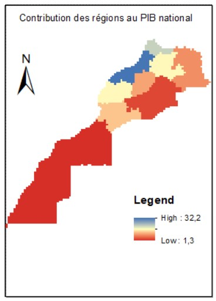
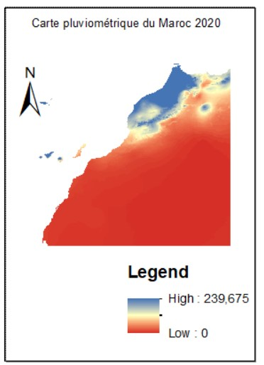

Les trois régions de Casablanca-Settat, de Rabat-Salé-Kénitra et de Tanger-Tétouan-Al Hoceima ont créé 58,7% de la richesse nationale, en 2020, selon les comptes régionaux publiés par le HCP. La capitale économique représentait 32,2% de la richesse nationale, contre 15,6% et 10,8% respectivement pour Rabat-Salé-Kénitra et Tanger-Tétouan-Al Hoceima.
Cinq régions ont généré 34,2% du PIB : les régions de Fès-Meknès et de Marrakech-Safi avec 8,4% chacune, la région de Souss-Massa avec 6,7%, de Béni Mellal-Khénifra avec 5,7% et de l’Oriental avec 4,9%. Quant aux régions de Drâa-Tafilalet et les trois régions du sud, elles ont contribué de 7% à la création de PIB en valeur, avec 2,5% et 4,5% respectivement.
Analyse
En moyenne entre 2017 et 2018 les régions de Casablanca-Settat, de Rabat-Salé-Kénitra et de Fès-Meknès ont accaparé un peu plus de la moitié (51,5%) des dépenses de consommation finale des ménages (DCFM) au niveau national, avec 25% , 14,8% et 11,7%, respectivement.
Celles de Tanger-Tétouan-Al Hoceima et de Marrakech-Safi ont détenu une part de 22,6% des DCFM, répartie respectivement à 11,4%et 11,2%.
Les sept régions restantes ont contribué pour près d’un quart (25,9%) aux DCFM, avec des apports compris entre 0,7% pour la région de Dakhla-Oued-Ed-Dahab et 7,2% pour la région de Souss-Massa.
A cet effet, la dispersion des dépenses de consommation finale des ménages par tête a enregistré une légère hausse. L’écart absolu moyen est passé de 2 734 DH en 2017 à 2 856 DH en 2018 à 2 880 DH en 2019. La crise sanitaire du Covid-19 a causé une diminution dans les dépenses en 2020.
Analyse
L'Initiative Nationale pour le Développement Humain (INDH) a été lancée le 18 Mai 2005 par Sa Majesté Le Roi Que Dieu L'Assiste. Cette initiative s'inscrit dans le cadre des réformes fondamentales et des projets structurants que le Royaume a engagé, notamment dans les domaines de la consolidation de l'Etat de droit, de l'élargissement des espaces de libertés, de la promotion des droits de la femme, de l'enfance et des catégories sociales démunies et fragiles.
Pour la mise en oeuvre du plan d'action au titre de l'année 2020, 484 projets ou actions ont été réalisés à fin Mai 2020 pour un montant global de 600 MDH. La répartition du montant du crédit attribué pour chaque région est illustré dans la carte ci-dessus.
Analyse
Le montant des programmes d'investissement des établissements et entreprises publics (EEP) s'élève globalement, pour l'exercice 2022, à 92,1 milliards de DH, relève-t-on dans la note de présentation du projet de loi de finances (PLF) 2022.
Or, ces programmes d'investissement couvrent principalement les secteurs présents dans les métropoles au Maroc: Casablanca, Rabat, Tanger, Marrakech et Oujda. Le diagramme ci-dessous illustre ces disparités entre les grandes régions et les petites régions.


Analyse
Ces deux cartes illustrent la corrélation entre la pluviométrie et la richesse au Maroc.Pour un pays aussi dépendant de son agriculture que le Maroc, la pluviométrie conditionne fortement la croissance économique.
La sécheresse impacte considérablement la population marocaine de manière globale, du fait que 80% des ruraux en subissent les effets en termes de moyens de subsistance tributaires de l’activité agricole, qui représente non moins de 15% du PIB et emploie 40% de la population active. Quelque 3,8 milliards de dirhams (plus de 400 millions de dollars) sont nécessaires pour les seules subventions à la farine en 2022, selon un responsable du ministère de l'Economie. Malgré une embellie pour les récoltes en 2021, une sécheresse alarmante affecte considérablement l'agriculture en ce début d'année. Ce stress hydrique affecte toute l'économie rurale.